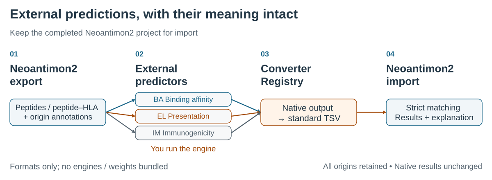

Convert external prediction output into traceable Neoantimon2 evidence. BA, EL and IM retain their distinct meanings. These adapters do not run prediction engines.
Start: export, convert and import · Choose an exact converter version

Feedback is not certification or execution consent. Issue #3 is maintainer synthetic testing (both reactions are from @hase62; no independent community validation), not independent user evaluation. Submission and maintenance reference.
License boundaries: converter and infrastructure terms, PolyForm Noncommercial license, required notice.